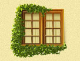

Ландшафтное проектирование Ландшафтное проектирование |
 Озеленение Озеленение |
 Водоемы Водоемы |
 Малые архитектурные формы Малые архитектурные формы |
 Стилевые сады Стилевые сады |
 Посадка крупномеров Посадка крупномеров |
 Зимние сады Зимние сады |
Вертикальное озеленение |  Инженерные системы Инженерные системы |
 Обслуживание садов Обслуживание садов |
Посадка крупномеров
Крупномеры — один из самых сложных участков работы специалистов по ландшафтному дизайну. Однако деревья крупномеры не сравнятся с другими растениями по своему величию и мощи. Именно поэтому при создании ландшафтного дизайна так часто используются деревья, которые могут достигать в высоту нескольких метров. Там, где еще вчера росла только трава, сегодня могут появиться кроны высоких ясеней и елей.
Посадка крупномеров — трудоёмкая процедура, ведь при пересадке дерево может пострадать и не прижиться на новом месте. Но если Вы доверите посадку крупномеров нам, дерево благополучно переживёт переезд! Специалисты Oridis Design знают, как правильно обращаться с деревьями. Мы поможем выбрать нужные Вам породы деревьев и кустарников, подберём растения подходящего возраста и сделаем всё возможное, пересадка произошла для них как можно безболезненней.
Посадка деревьев — одна из ключевых составляющих создания ландшафтного дизайна. Нами будет грамотно и профессионально произведена и посадка хвойных деревьев, и небольших кустарников. Кстати, именно хвойные деревья позволяют сделать участок зеленым круглый год, и смотрятся они торжественно и красиво. Существуют даже виды садов, в создании которых используются преимущественно хвойные растения (например, японский сад). Впрочем, при желании на Вашем участке может вырасти роща или аллея и лиственных растений: рябины, липы, каштаны, березы и др.
 Примеры работ
Примеры работУстройство газона — не менее трудоёмкий и сложный процесс. При устройстве газона должны соблюдаться особые технологии, — только тогда он будет густым, долгоживущим и красивым. В зависимости от целей и технологии производства газоны могут быть нескольких видов. Например, чтобы быстро придать участку завершённый вид, можно использовать рулонный газон. Более сложными считаются мавританский или луговой газон.
Вне зависимости от вида, если посадка газона производилась по правилам, он будет радовать Вас даже после первого снега. Компания Oridis Design осуществляет посадку газона и деревьев качественно и быстро. Обратившись в нашу компанию, Вы получите красивый, гармоничный и функциональный сад в короткие сроки!
 Цены на услуги и материалы
Цены на услуги и материалы{kind=link}
{kind=link}
{kind=link}
{kind=link}
{kind=link}
{kind=link}